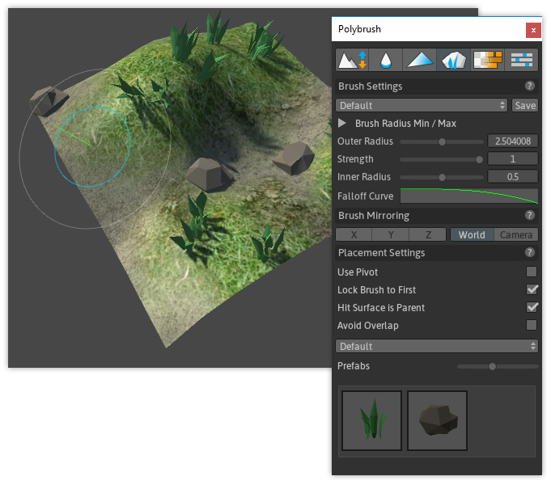

About
Prefab Placement mode enables you to "paint" prefabs onto a mesh, similar to painting in detail meshes (grass, rocks, etc) with the Terrain Tools.
Usage
- In your scene, select the mesh you intend to paint on
- Click the Prefab Placement toolbar button ()
- If you haven't already, add your prefabs by drag-and-dropping them into the Prefabs area (labeled "Drag Prefabs here!")
- Click to select a single prefab, or SHIFT-click to select multiple- you will see a green bar highlight below each selected prefab
- Modify your Brush if needed, and paint onto the mesh in your scene
Prefab Placement Options
Use Pivot
| Setting | Description |
|---|---|
| off | Prefabs will be placed directly on top of the mesh |
| ON | Prefabs will be placed using their pivot point |
Hit Surface is Parent
| Setting | Description |
|---|---|
| off | After placement, prefabs will not be parented to the mesh being painted on |
| ON | After placement, each prefab will be parented to the mesh being painted on |
Avoid Overlap
| Setting | Description |
|---|---|
| off | Polybrush will not attempt to avoid overlapping prefabs |
| ON | Polybrush will attempt to avoid placing prefabs where they might overlap with others |
Prefab Palette
Save and load sets of Prefabs for future use.
Prefabs
- Adjust the slider to change Prefab preview size
- Drag prefabs into the box to add them for use
- Select a prefab and hit "Backspace" to remove it
- Click to select, SHIFT-click to select multiple prefabs